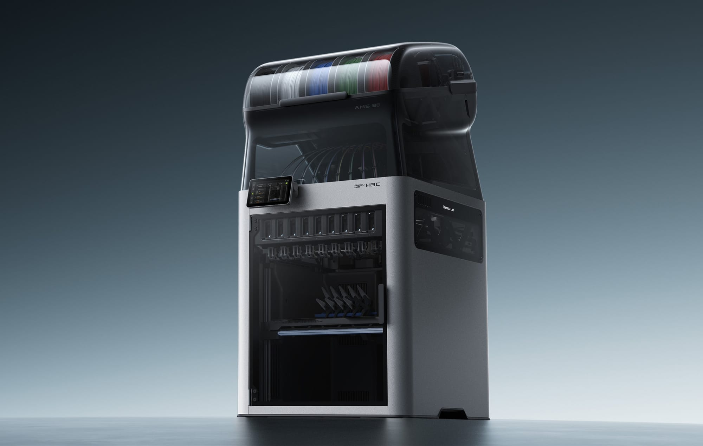

9 个打印工具头各带独立料路、加热、切刀，换头约 6 秒，CNC Kitchen 实测 6–7 秒，H2C 约 40 秒。单次换料约 38–50mg，仍需擦料塔。
8 号槽原生 2.85mm 工具，75A TPU 可打，CNC Kitchen 实测 60A、10mm³/s 稳定。软硬混打一件完成，是 H3C 相对竞品最硬的差异。
机头风扇比 H2C 小，靠两侧大辅扇远程直吹补偿；9 个头挂架上主动预热，靠挂架风扇防热蠕变。突破与风险在同一处，见第 04 节。
| 项目 | 数值 | 来源 |
|---|---|---|
| 换头换料 | 官方 6 秒全程、3.4 秒切换；CNC Kitchen 实测 6–7 秒 | 官方 / CNC Kitchen |
| 单次废料 | 官方 38mg；实测约 50mg / 次，4000+ 次换色约 200g 塔 | 官方 / CNC Kitchen |
| 成型 / 温度 | 330×320×325mm；喷嘴 350°C、热床 120°C、腔温 65°C | 官方规格 |
| 速度 | 标称 1400mm/s、25000mm/s²；实测只比 H2C / H2D 快约 10% | 官方规格 / CNC Kitchen |
| AMS 3H | 9 槽密封；6、8 号槽可边打边烘，最高 85°C；其余 7 槽不加热 | 官方 |
| 评分 | TechRadar 5/5、How-To Geek 9/10、Aurora Tech 89.5/100；Tom's Hardware 未裁定（SimplyPrint 4.5/5，CommentChoisir 记 4/5） | 海外评测汇总 |
| # | 项目 | 具体表现 | 来源 | 厂商心得 | 机会 |
|---|---|---|---|---|---|
| 01 | SwapTek 九工具切换 | 9 个打印工具头各带独立料路、加热、切刀，换头约 6 秒，切换本身 3.4 秒；CNC Kitchen 实测 6–7 秒，H2C 约 40 秒 | 海外评测 | 把“换料”改成“换头”，退料与冲刷的活交给 9 个完整打印头 | 第三方底座 / 喷嘴平替、备用头收纳架 |
| 02 | 废料大幅减少 | 单次换料约 38–50mg，仍需擦料塔，但远低于单喷头多色方案；4000+ 次换色约 200g 塔 | 海外评测 | 换头省了大部分冲刷，但擦料塔还在，“零废料”只是话术 | 切片优化、擦料塔小型化 |
| 03 | 2.85mm 75A 软料 | 8 号槽原生 2.85mm 工具，75A TPU 可打，CNC Kitchen 实测 60A、10mm³/s 稳定 | 海外评测 | 粗丝抗弯折，软料不必走 AMS 细管路 | 第三方 2.85mm TPU 耗材 |
| 04 | 混喷嘴、混材料同打 | 0.2–0.8mm 可混用，如表盘 0.2、壳体 0.4、TPU 带 2.85mm，一件完成 | 海外评测 | 一件里粗细搭配，是换头机真正的差异化 | 多规格喷嘴套装、混打模型库 |
| 05 | AMS 3H 九料位 | 9 槽密封，6、8 号槽可边打边烘，最高 85°C | 官方 / 海外评测 | 9 槽是“一色一头”的前提，密封是底线 | 第三方防潮件、料卷适配器 |
| 06 | 打印核心没缩水 | 喷嘴 350°C、热床 120°C、腔温 65°C、1400mm/s，成型 330×320×325mm | 官方规格 | 温度与速度的旗舰底线没让步 | 高温 / 工程料配件 |
| 07 | 双 1080p 摄像头 + 过滤 | 两个 1080p 摄像头、高效滤网 / 活性炭过滤在内 | How-To Geek | 监控与空气净化是家用场景的加分项 | 第三方滤芯平替 |
| 08 | 五口插座 | 用户观测点 | 用户实测 | 接口给足，细节不省 | — |
| 09 | 摄像头遮光罩和保护罩 | 用户观测点，细节保护到位 | 用户实测 | 细节保护到位 | — |
| 10 | 切刀顶针 | 用户观测点 | 用户实测 | 小零件决定换头可靠性 | 耗材类备件 |
| 11 | 微型编码板 | 用户观测点 | 用户实测 | 每个头自带身份识别 | — |
| 12 | 人走进亮灯？ | 用户观测存疑，待核实是否为人体感应自动亮灯，不得写成定论 | 用户实测（待确认） | 待核实，尚无定论，不写心得 | 待核实后再看 |
| 13 | XY 空心光轴 | 用户观测点，轻量化运动结构 | 用户实测 | 轻量化换速度 | — |
| 14 | 福马轮软脚垫 | 用户观测点，减震 / 调平脚垫 | 用户实测 | 36kg 整机的减震配套 | 第三方减震垫 / 脚垫 |
| 15 | 喷嘴上下移动切换新增 | 喷嘴上下移动完成取放切换，机械对接，不只靠磁吸；用户认为这套其他家还没学会，INDX 只靠磁吸容易掉 | 用户实测 | 上下取放、机械对接，不只靠磁吸；用户认为这套其他家还没学会 | 同尺寸多配喷嘴，少换尺寸 |
| # | 项目 | 具体表现 | 来源 | 改进可能 | 厂商心得 | 机会 |
|---|---|---|---|---|---|---|
| 01 | TPU 料卷芯片不能自动更新 | 有时需手动点重读 | 用户实测 | 固件升级 | 耗材识别还没闭环 | 固件升级 |
| 02 | 工程耗材受限 | 官方说明：含碳 / 玻纤料过 AMS 3H 料斗阻力大，建议走外部料盘；PPA-CF 易断，同样建议外置；高温料打印前需先卸掉 PLA / PETG，否则会在供料管里软化 | 用户实测 + 官方 / 论坛 | 设计硬伤 | AMS 料路为常规料设计，工程料是结构性短板 | 外置料架、第三方耐磨料路件 |
| 03 | 硬耗材受限 | 同上，硬 / 脆 / 增强料在 AMS 料路里易卡、易断 | 用户实测 + 官方 | 设计硬伤 | 同上，硬 / 脆 / 增强料易卡易断 | 外置料架 |
| 04 | 调平仍靠点击，耗时较长 | 首次校准约 1 小时；9 个头需各自校准 Z 轴偏移；高速扫描准确性待验证 | 用户实测 + 海外评测 | 下代改善 | 9 个头逐个校准，是换头架构的代价 | 固件 / 切片优化校准流程 |
| 05 | AMS 顶部无灯光 | 用户观测点 | 用户实测 | 后期加装 | 顶部空间让给 AMS，灯被省了 | 第三方 AMS 顶灯 |
| 06 | 整机太高，柜子不适配 | AMS 开盖近 50 英寸，约 1 米高、36.28kg，需梯子或 Bambu Station 才好换料 | 用户实测 + 海外评测 | 第三方：柜子降低 10cm | 1 米高是 9 头 + 顶置 AMS 的体积代价 | 工作站 L、第三方底座架、降高柜 |
| 07 | 喷嘴底座价格高 | 标配全 0.4mm，打 9 色 1.75mm 需另买 1 个 1.75mm 打印工具头；喷嘴 169 元/个，底座+喷嘴 499 元/套；1.75 / 2.85mm 底座、热端不互换 | 用户实测 + 官方问答 | 第三方 | 底座+喷嘴 499 是耗材化定价 | 第三方底座 / 喷嘴平替 |
| 08 | 无自动回卷 | 换卷前必须在屏上手动退料，约 2 米料要手动收回 | 海外评测 | 固件 / 下代 | AMS 3H 省了自动回卷机构 | 固件 / 下代 |
| 09 | 仅 2/9 槽可烘干 | 6、8 号共用一个烘干腔，PLA 与 PA / PC 混烘要迁就低温料，烘高温料前需卸掉低温料 | 海外评测 / 论坛 | 下代 | 烘干只给 2 槽是成本妥协 | 第三方外置烘干、干燥盒 |
| 10 | 擦料塔仍在 | 约 50mg / 次，复杂多色件仍有可观废料 | 海外评测 | 切片优化 | 停放降解让擦料塔去不掉 | 切片优化 |
| 11 | 一料一头，无自动续料 | 同种料用完不能自动切到另一槽同种料续打 | 国内汇总 | 下代 | 槽位与头锁定配对，续料逻辑没做 | 固件 / 下代 |
| 12 | 软料旁路进料麻烦 | 95A 以下 TPU 需走旁路，拆侧板、盲穿管线，高处看不见接口 | 海外实测 | 下代 | 95A 以下软料绕过 AMS 是不得已 | 第三方旁路进料套件、侧板收纳架 |
| 13 | 外围减配 | 屏幕 5 英寸 854×480、无以太网 / 网络断网开关 / 802.1X、无激光、顶视相机与视觉编码器另购 | 官方规格 | 另购 | 屏幕、以太网、激光被砍去保价格 | 官方另购件、第三方配件 |
| 14 | 价格与配件成本高 | 16499 元起，国补后 13999 元起，0.2 / 0.6 / 0.8 热端、工艺工具等均另购；只偶尔打多色很难摊平 | 海外评测 | — | 13999 是锚，配件另算是商业模式 | 第三方平替、等促销 |
| 15 | 喷嘴散热：机头风扇变小，靠两侧远程大辅扇直吹补偿新增 | 官方四重冷却：机头部件风扇 + 左右辅助风扇 + 挂架风扇 + 腔体风扇；CNC Kitchen：机头风扇比 H2C 小，靠两个大侧扇补偿。远程直吹风程长、易受模型遮挡，精细悬垂的指向性不如贴近喷嘴的风扇 | 用户观测 + 官方 / CNC Kitchen | 设计取舍 | 减重 40% 的取舍，风扇做小、远程大辅扇补 | 固件 / 切片优化风扇策略 |
| 16 | 停放工具降温，熔料降解新增 | 工具停放后慢慢冷却，熔区里的料会降解，取回时需先建压，仍需擦料塔约 50mg / 次；INDX 约 10mg / 次 | CNC Kitchen | 切片 / 固件优化 | 9 头常驻预热的另一面 | 切片 / 固件优化 |
| 17 | 换喷嘴需拆 3 颗螺丝新增 | 相对 H2D 免工具 <30 秒换嘴是倒退；想多配几个 0.2mm 头还得配对应颜色料卷 | 论坛 / 海外评测 | 下代 | 换嘴便利让给结构强度 | 第三方快拆工具 |
| 18 | 9 槽锁定配对易占满新增 | 同种料换不同喷嘴尺寸也会占槽，9 工具 / 9 槽很快不够用 | 论坛 | 下代 / P3C | “一色一头”的另一面 | P3C / 下代多头 |
| 19 | 低温料与高温料不能共存新增 | 无全回抽，ABS / ASA + PLA / PETG 同时装机时，腔温加热会软化低温料；官方警告只写“低温残料可能堵头”，未明确提醒卸掉 PLA | 论坛 / 官方 | 使用注意 | 无全回抽是架构取舍 | 使用注意、切片提示 |
| 20 | H2C 打印板不兼容新增 | H2C 板 Y 长 5mm，H3C 会报错，需裁切 | CNC Kitchen | — | Y 长 5mm 是尺寸改动 | 第三方兼容板 |
| 21 | 实测速度只比 H2C / H2D 快约 10%新增 | 标称 1400mm/s、25000mm/s²，实际打印只快约 10%；高速下仍有轻微打印瑕疵 | CNC Kitchen | 固件 / 切片 | 标称速度不等于实际提速 | 固件 / 切片优化 |
| 22 | AMS 侧面板无处安放新增 | 95A 以下软料走旁路要拆 AMS 3H 侧板，拆下的侧板没地方放，随手放易磕碰、刮花、损坏；侧板拆下后 AMS 开口，进灰受潮 | 用户实测 | 第三方收纳架 / 挂架 | 旁路进料要拆板，拆下的板没设计收纳位 | 第三方侧板收纳架 / 挂架 |
机头部件冷却风扇、左右辅助部件冷却风扇配合，为悬垂和桥接精准降温；腔体散热风扇持续吸入环境冷空气，打印 PLA / PETG 时维持低腔温，防止堵头；打印头挂架散热风扇在预加热时防止热量向上传导，避免耗材软化。
CNC Kitchen：机头风扇比 H2C 小，靠两个大侧扇补偿；工具停放后慢慢冷却，熔区里的料会降解，取回时需先建压，这就是擦料塔还在的原因。Hackster：打印质量与 H2C 相当但不及 H2S / H2D，疑与全硬化钢喷嘴 + 非常规热端几何有关，TPU 悬垂 / 欠挤出偶发。
一件模型换料次数越多，6 秒换头和废料下降的收益越大。41 码鞋不到 3 天（H2D 要 5–6 天）、5 色小狐狸 37 小时 → 6 小时，都是换色密集场景的实测。
| # | 机会 | 现状 | 来源 |
|---|---|---|---|
| 01 | 工作站 / 底座架 | 官方工作站 L（Bambu Station L）把整机抬到站立操作高度，底部收纳、带脚轮、承重约 90kg，兼容 H3C / H2C / H2D / H2S；用上它需预留 593×1056×1900mm 空间。国内售价待核实。第三方已有 BIQU 熊猫工作站（约 76cm 高、承重 100kg、带脚轮与抽屉）；自制降高柜（柜子降低 10cm）也是同类解法，见不足 #06 | 官方 / 3druck |
| 02 | 底座 / 喷嘴平替 | 官方喷嘴 169 元/个、底座+喷嘴 499 元/套，9 个头配齐成本高，第三方底座与喷嘴有降价空间；目前未见已上市的第三方兼容底座，写的是机会，不是已有产品 | 用户提供价 / 待核实 |
| 03 | 灯 / 排废 / 收纳 | AMS 顶部无灯可后期加装（不足 #05）；工作站 L 的废料导槽已有 MakerWorld 打印文件，抽屉按 Gridfinity 网格，可自打收纳盒归位工具与耗材 | 官方 / MakerWorld |
| 04 | AMS 侧面板收纳 | 旁路进料要拆侧板，拆下的侧板没地方放，易磕碰损坏；第三方可做收纳架 / 挂架，把侧板挂在机身或墙上 | 用户观测 |
H3C 把“换头”做成了消费级完全体：6 秒换头、废料大减、75A 软料、混喷嘴混材料一件完成，是这代最硬的进步；代价也集中：高、贵、9 槽锁定、工程料受限、外围减配。按你的长文口径，可能是未来五年最好的机器，离完美还差三年。